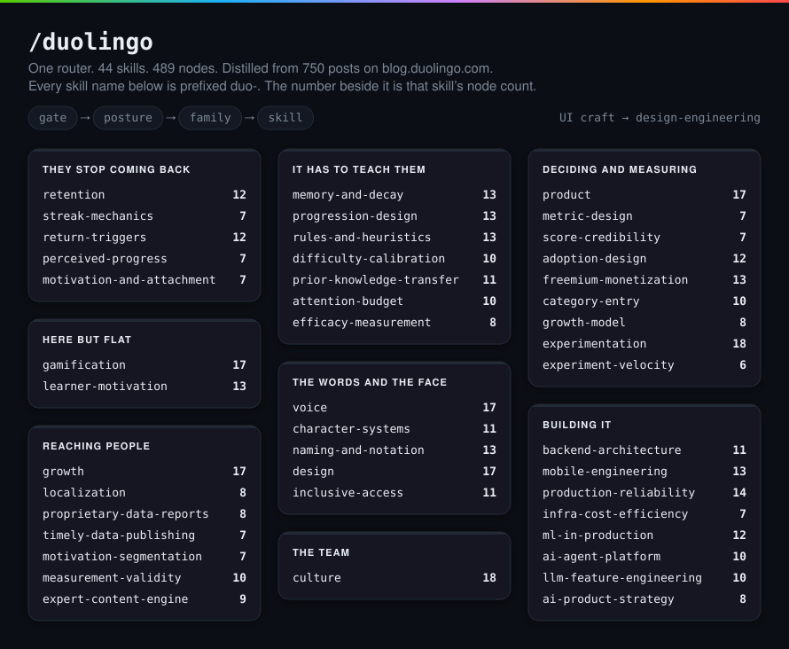
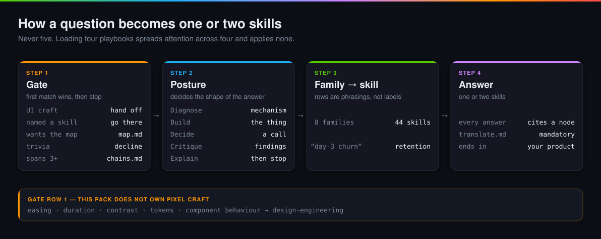
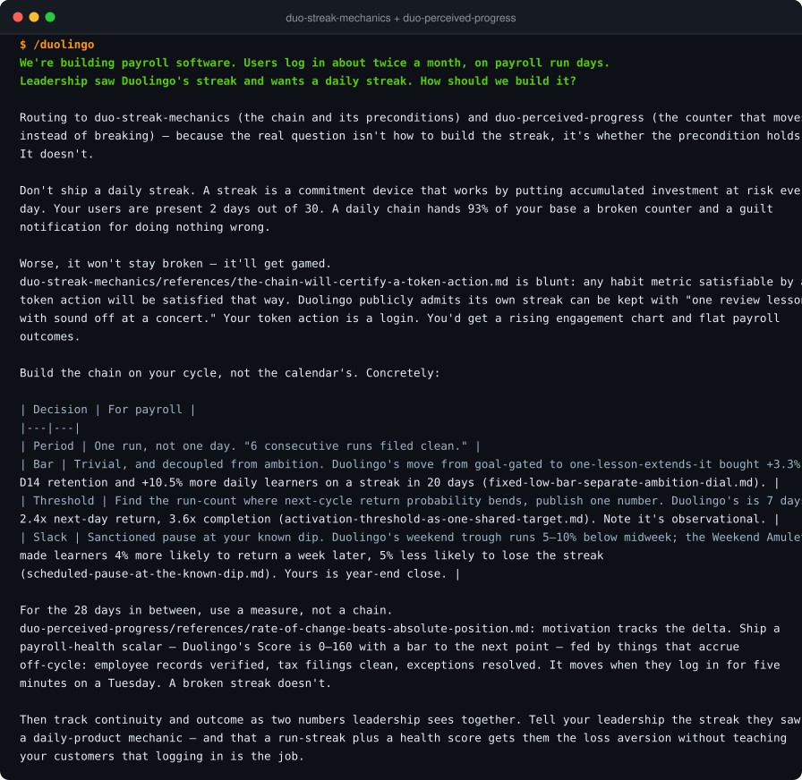
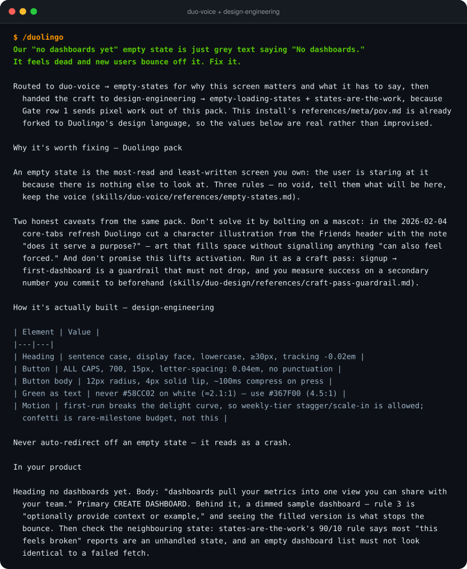
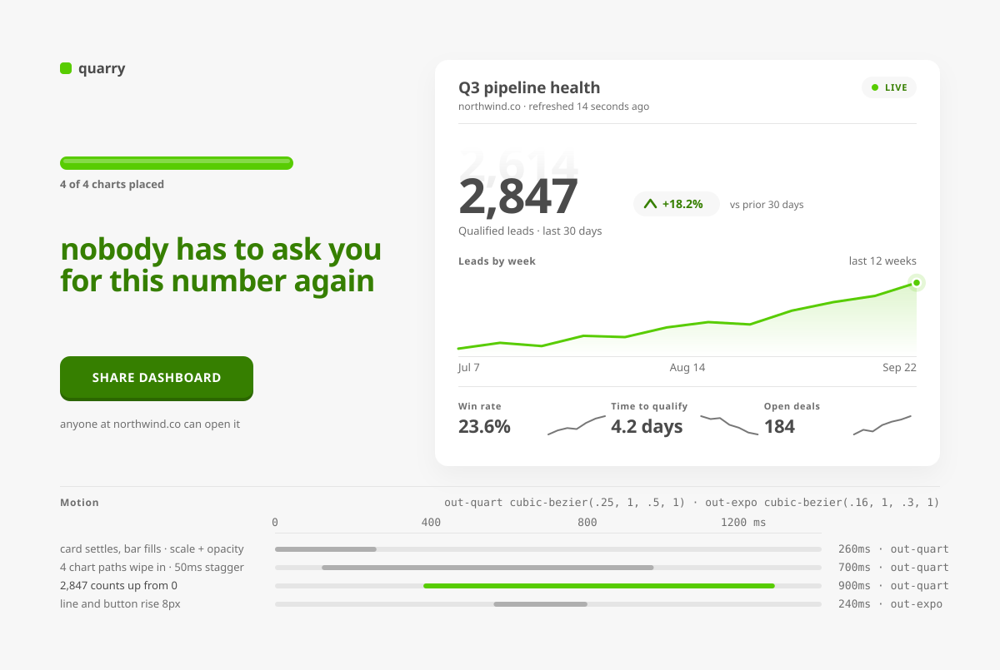
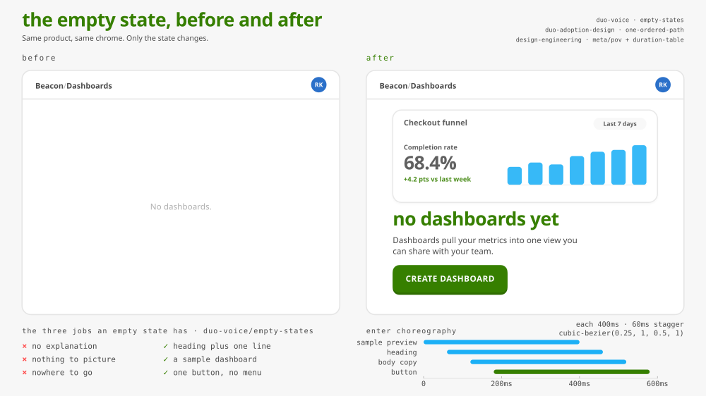
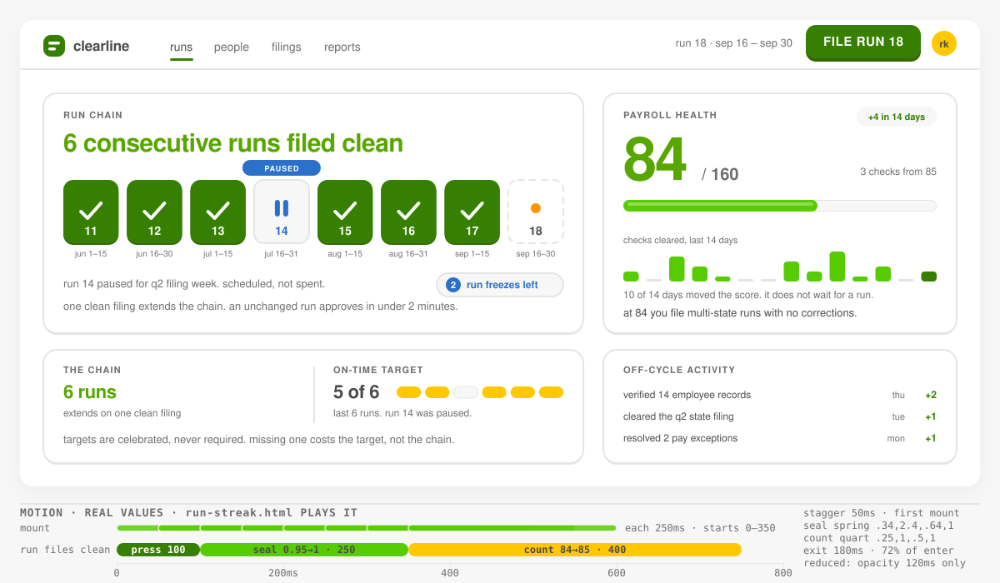
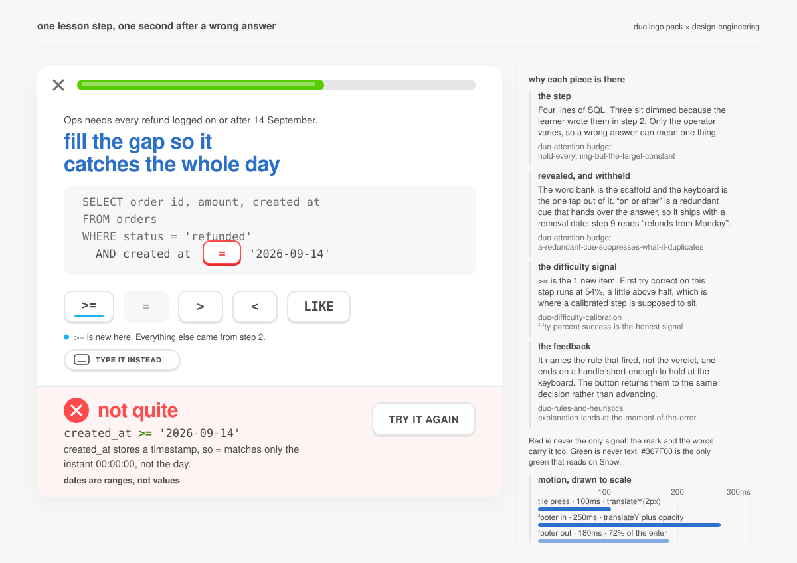

/duolingo — visualsGenerated from the repo’s real state and real router runs. Open the live links to see the motion.
44 skills in eight families, with live node counts. Regenerated from what is on disk, so it cannot drift.

Gate, then posture, then family and skill. Gate row 1 hands every UI-craft question to design-engineering.

Actual output from agents that loaded the router and followed it, set in a terminal.


Built by reading both packs: the Duolingo skills decide what and when, design-engineering decides how it is built. Every duration, easing curve and radius traces to a node — none were invented. The live links open the animated version.



